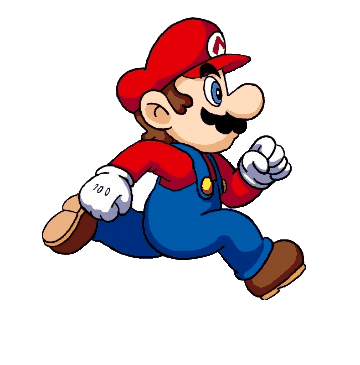

<!-- Estrutura base do html. Tod projeto de html tem que ter isso-->

<!DOCTYPE html>

<html lang="en"></html> <!-- Linguagem em inglês -->

<head>

    <meta charset="UTF-8"> <!-- ESSE É O PRIMEIRO METADADO. É UMA FORMA DE INDICAR OS CHARACTER QUE VAMOS USAR. VAMOS DEIXAR DE FORMA PADRÃO "UTF-8"-->

    <meta name="viewport" content="width=device-width, initial-scale-1.0"> <!-- ESSE METADADO INDICA QUE VAMOS PODER ADAPTAR O NOSSO CÓGIDO A OUTROS DISPOSITIVOS, COMO CELULARES, POR EXEMPLO. MANTEVE O CÓDIGO -->

    <!-- <link rel="stylesheet" type="text/css" href="style.css"> Aqui é linkar os outros arquivos, neste caso para linkar o arquivo em CSS -->

    <!-- <script src="script.js" defer></script> Aqui é linkar os outros arquivos, neste caso para linkar o arquivo em java -->
    
    <link href="https://camiloacarvalho.github.io/Jogo1/style.css" rel="stylesheet" />
    
    <script src="https://camiloacarvalho.github.io/Jogo1/script.js"> </script>

    <title> Mario Game </title>

</head>

<body>

    <div   class="game-board"> <!-- Vai ser dentro dessa div que o jogo vai rodar. Pra isso estamos dando esse nome a classe -->

         <!-- Animação do Mário correndo -->
          
        <!--  tive bastante dificulde pra carregar essa imagem. Simplemente pelo fato dela estar dentro de uma subpasta, dai tirei o arquivo da imagem da subpasta e coloquei junto com os arquivos de códigos -->

         <!-- O game original era um tubo, mudei para bala de canhão -->

         <!-- Para adicionar mais um charme, coloquei a base de disparo da bala de canhão -->

         <!-- Nuvens para dar mais charme ao jogo -->

         <!-- Tela de gameover -->

        <!-- <iframe src="https://giphy.com/embed/Lp2DXaHwco9FK" width="372" height="480" frameBorder="0" class="giphy-embed" allowFullScreen></iframe> Opção de gif para game over-->
    
    </div>

    <footer class="rodape">

        <button class="reiniciargame" onclick = "window.location.reload()">REINICIAR JOGO</button>

    </footer>

</body>

</html>
